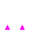
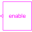
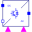
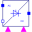
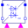
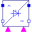

Enable2Partial model providing enable parameter and optional enable input for two firing signals |

|
Diagram
{kind=link}
Information
This information is part of the Modelica Standard Library maintained by the Modelica Association.
This partial model provides the enabling logic for two firing signal.
Parameters (3)
| useConstantEnable |
Value: true Type: Boolean Description: Disable boolean input and use constantEnable, if true |
|---|---|
| constantEnable |
Value: true Type: Boolean Description: Constant enabling of firing signals |
| m |
Value: 1 Type: Integer Description: Number of phases |
Connectors (3)
| enable |
Type: BooleanInput Description: Enables fire and notFire |
|
|---|---|---|
| fire_p |
Type: BooleanInput Description: Firing signal of positive potential transistor |
|
| fire_n |
Type: BooleanInput Description: Firing signal of negative potential transistor |
Components (3)
|  | enableLogic |
Type: EnableLogic Description: Enabling logic |
|---|---|---|
| andCondition_p |
Type: And Description: And condition for positive firing signal |
|
| andCondition_n |
Type: And Description: And condition for negative firing signal |
Extended by (5)
|
Modelica.Electrical.PowerConverters.DCDC H bridge (four quadrant converter) |
|
|  |
Modelica.Electrical.PowerConverters.DCAC Single-phase DC to AC converter |
|  |
Modelica.Electrical.PowerConverters.ACDC Two pulse thyristor rectifier with center tap |
|  |
Modelica.Electrical.PowerConverters.ACDC Two pulse Graetz half controlled rectifier bridge |
|  |
Modelica.Electrical.PowerConverters.ACDC Two pulse Graetz thyristor rectifier bridge |